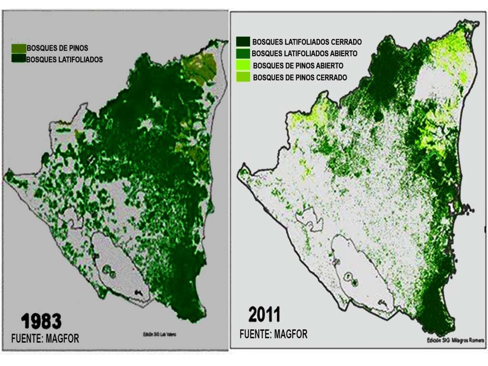
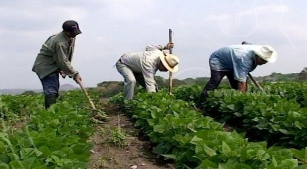
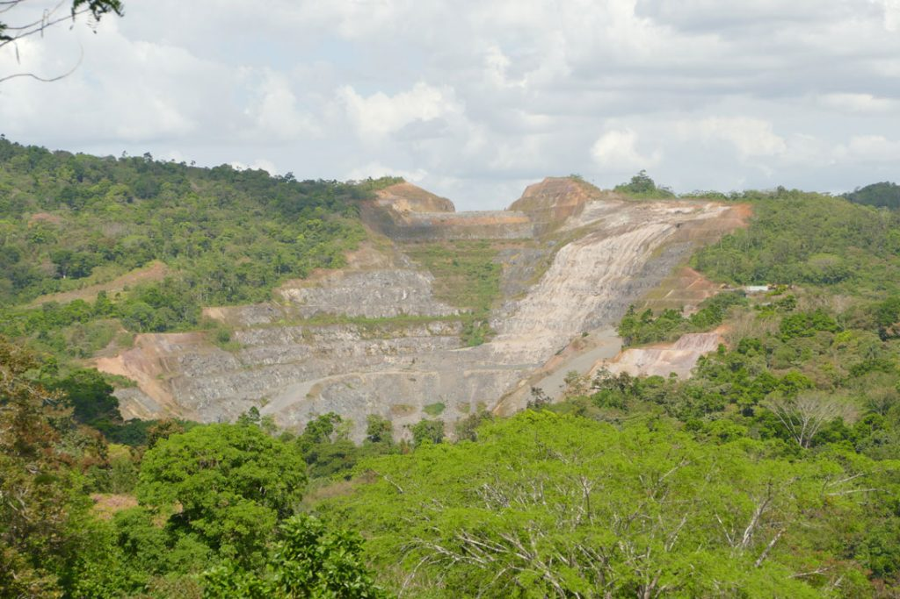
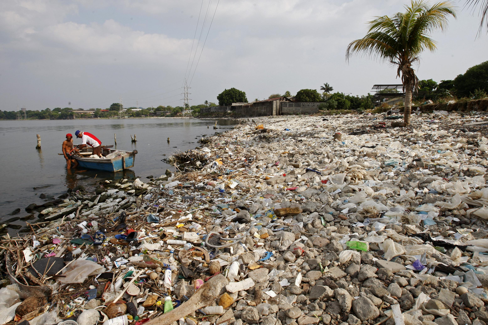

Impacto ambiental sobre diferentes industrias
En la actualidad, la preocupación por los impactos ambientales de las actividades empresariales está en aumento. Este apartado se enfoca en examinar de cerca el impacto ecológico de diversas empresas en diferentes sectores. Desde la manufactura hasta los servicios, cada industria tiene consecuencias ambientales específicas. Exploraremos estas implicaciones para fomentar una comprensión más profunda de cómo las prácticas empresariales afectan el medio ambiente y abogar por enfoques más sostenibles.
Definicion de impacto ambiental
Se trata de los resultados de acciones humanas que provocan alteraciones en el entorno, generando desequilibrios en el equilibrio ambiental. Algunos de los efectos más comunes incluyen la contaminación del aire, de las aguas (mares, ríos y aguas subterráneas), así como del suelo. Además, se manifiesta en la generación de residuos, la contaminación acústica y la degradación de los ecosistemas, con la consiguiente pérdida de biodiversidad.(MAPFRE, 2020)
Qué son los humedales?
Según(Ramsar, 2024), la definición del término “humedal” se refiere a toda área terrestre que está saturada o inundada de agua de manera estacional o permanente. Entre los humedales continentales se incluyen acuíferos, lagos, ríos, arroyos, marismas, turberas, lagunas, llanuras de inundación y pantanos. Entre los humedales costeros se incluyen todo el litoral, manglares, marismas de agua salada, estuarios, albuferas o lagunas litorales, praderas de pastos marinos y arrecifes de coral.
Los humedales están experimentando una rápida disminución, y según cálculos actuales, se estima que ha desaparecido al menos el 64% de estos ecosistemas desde 1900. Las principales causas de esta degradación y pérdida incluyen cambios significativos en el uso del suelo, especialmente el aumento de la agricultura y el pastoreo. Además, la desviación del agua a través de represas, diques y canalizaciones, así como el desarrollo de infraestructuras, especialmente en áreas urbanas, valles fluviales y zonas costeras, contribuyen de manera significativa a este problema.(Ramsar, 2024)
Deforestacion en Nicaragua
La deforestación representa un desafío crítico en Nicaragua, donde la pérdida significativa de bosques debido a la tala indiscriminada para la agricultura, la extracción de madera y el desarrollo urbano descontrolado resulta en la degradación del suelo y la pérdida de biodiversidad. Un estudio del Centro Humboldt reveló que el país perdió alrededor de 1.4 millones de hectáreas de bosque entre 2011 y 2018, a un ritmo de aproximadamente 70,000 hectáreas por año, principalmente debido a cambios en el uso del suelo para la agricultura y la ganadería. Según Mongabay Latam, se registraron 7,483 alertas de deforestación en el período de enero a agosto de 2021, concentrándose inicialmente en la parte nororiental de la reserva. La pérdida de alrededor de 600,000 hectáreas de bosque en áreas protegidas durante el mismo período destaca la urgencia de implementar prácticas sostenibles y programas de reforestación para preservar los valiosos recursos naturales de Nicaragua.(Portillo, 2023)
Contaminacion por pesticidas en la agricultura
La agricultura intensiva y el uso excesivo de agroquímicos en Nicaragua han ocasionado serios problemas de contaminación ambiental. Los pesticidas y fertilizantes empleados en los cultivos pueden infiltrarse en el suelo, contaminando las aguas subterráneas y afectando la calidad del agua potable, así como la salud humana. Además, los sedimentos y nutrientes arrastrados por la lluvia pueden causar la eutrofización de ríos y lagos, generando daños irreversibles en los ecosistemas acuáticos. (Portillo, 2023)
En particular, la Reserva de la Biosfera Río San Juan en Nicaragua, que alberga bosques endémicos únicos en el mundo con una extencion territorial de 300,000 hectarias, se ve amenazada. La Reserva Indio Maíz, la más extensa de la reserva, sufrió un incendio en abril de 2018, causado por actividades agrícolas, destruyendo más de 5,000 hectáreas. La Fundación Río, un grupo ecologista, denunció que los incendios fueron provocados por la quema realizada por productores agrícolas locales. Estos eventos subrayan la urgencia de abordar la problemática de la contaminación por pesticidas y sus impactos devastadores en los ecosistemas naturales.(Portillo, 2023)
Contaminacion por pesticidas en la agricultura
La minería en Nicaragua, especialmente a gran escala, plantea serias preocupaciones ambientales. La extracción de minerales involucra el uso de sustancias tóxicas como cianuro y mercurio, que pueden filtrarse en el suelo y contaminar las fuentes de agua cercanas, afectando tanto la salud humana como la vida acuática. Además, la minería a cielo abierto contribuye a la destrucción del paisaje natural, la pérdida de vegetación y la alteración de ecosistemas, con la consiguiente disminución de la biodiversidad y riesgos de erosión del suelo. Para abordar estos desafíos, es imperativo fortalecer las regulaciones en la industria minera, implementar prácticas de extracción responsables que minimicen la contaminación, y establecer programas de remediación ambiental para restaurar las áreas afectadas. (Portillo, 2023)
Contaminación del agua en Nicaragua
La problemática de la contaminación del agua en Nicaragua representa un desafío significativo, afectando tanto a zonas urbanas como rurales. Las causas principales incluyen la descarga de aguas residuales no tratadas en cuerpos de agua, la falta de sistemas de tratamiento adecuados y la contaminación derivada de actividades agrícolas e industriales. Esta contaminación repercute no solo en la salud humana directamente, sino también en los ecosistemas acuáticos y la biodiversidad en general. Los químicos y sedimentos transportados por las aguas contaminadas pueden provocar la muerte de la vida acuática, la degradación de hábitats y la comprometida calidad del agua para usos futuros. (Portillo, 2023)